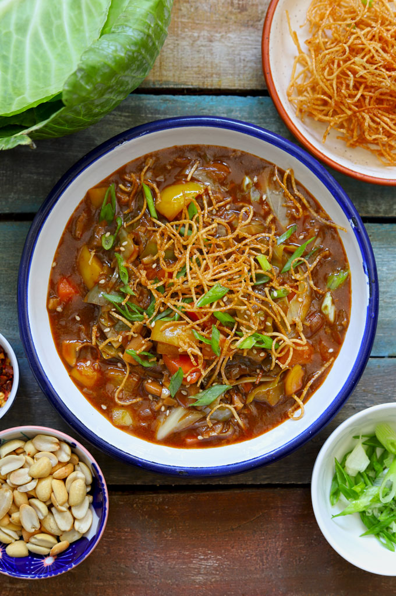

<==
American Chopsuey Recipe

Chop suey is a dish from American Chinese cuisine and other forms of overseas Chinese cuisine, generally consisting of meat and eggs, cooked quickly with vegetables such as bean sprouts, cabbage, and celery, and bound in a starch-thickened sauce.
Ingredients
- ¼ cup shortening
- 1 ½ cups diced pork loin
- 1 cup diced onion
- 1 cup diced celery
- 1 cup hot water
- 1 teaspoon salt
- ⅛ teaspoon ground black pepper
- 1 (14.5 ounce) can bean sprouts, drained and rinsed
- ⅓ cup cold water
- 2 tablespoons cornstarch
- 2 teaspoons soy sauce
- 1 teaspoon white sugar
Stepwise Guide!
- Gather all ingredients.
- Heat shortening in a large, deep skillet over medium-high meat. Add pork and sear until it turns white.
- Add onion and sauté for 5 minutes. Stir in celery, hot water, salt, and pepper. Cover skillet and simmer for 5 minutes.
- Add sprouts and bring mixture to a boil.
- Combine cold water, cornstarch, soy sauce, and sugar in a small bowl.
- Add to skillet mixture and cook until thickened to desired consistency, about 5 minutes.